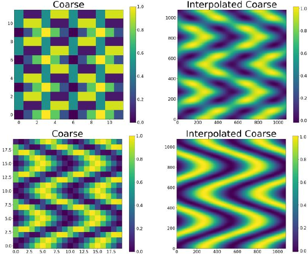
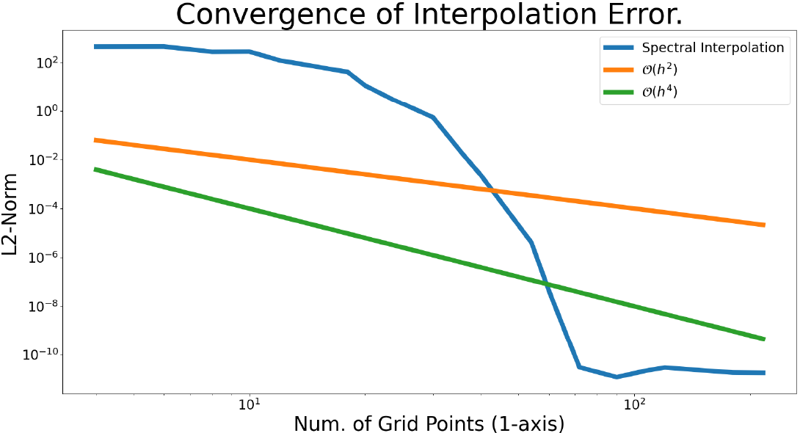
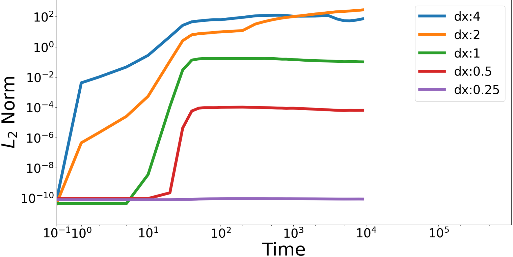

class: center, middle # Toward a Spinodal Decomposition Gold Standard Mohhamed Rafi, UMD [github.com/MohhamedRafi/nist_phase_field](https://github.com/MohhamedRafi/nist_phase_field) Trevor Keller & Daniel Wheeler, NIST [github.com/tkphd/pfhub-bm1-variations](https://github.com/tkphd/pfhub-bm1-variations) with significant assistance from Nana Ofori-Opoku (McMaster) and Andrew Reid (NIST) _CHiMaD Phase-Field Methods XV_ ??? > Press `C` to open a "clone", then `P` to toggle Presentation Mode. --- class: center # Comparing Field Data <img alt="Free energies" src="../fig/periodic/energy.png" width="95%" /> We can (should) learn more about our models by comparing field values: `\(\ell^2 = \left(\sum\limits_{x,y} (A - B)^2 \Delta x \Delta y \right)^{1/2}\)` --- class: center # Interpolation `\(p(x_{\mathrm{fine}}, y_{\mathrm{fine}}) = \sum\limits_{x}\sum\limits_{y}S_n(x) S_n(y) f(x, y)\)` where `\(S_n(x)\)` is a periodic weight function, `\(S_n(x) = \frac{h \sin(\pi x / h)}{2\pi \tan(x / 2)}\)` and `\(f(x,y)\)` represents the "coarse" field data.   --- class: center # Simulation Real space: `\(\frac{\partial c}{\partial t} = M\nabla^2\left(\frac{\partial f}{\partial c} - \kappa \nabla^2 c\right) \)` Fourier transform: operators (convolutions) become products, exponents become convolutions: `\(\begin{align*} \mathfrak{F}\left[\nabla c\right] &= i\vec{k}\hat{c}\\ \mathfrak{F}\left[\nabla^2 c\right] &= -\vec{k}^2 \hat{c}\\ \mathfrak{F}\left[\mathrm{const}\right] &= \delta \end{align*}\)` Transforming the equation of motion, we have `\( \frac{\partial \hat{c}}{\partial t} = - M\vec{k}^2\left(\mathfrak{F}\left[\frac{\partial f}{\partial c}\right] + \kappa \vec{k}^2 \hat{c}\right) \)` --- class: center # Transforming `\(\frac{\partial f}{\partial c}\)` `\(\begin{align*} \frac{\partial f}{\partial c} &= 2\rho (c - c_{\alpha})(c_{\beta} - c)(c_{\alpha} + c_{\beta} - 2 c)\\ &= 2\rho\left[ 2 c^3 - 3(c_{\alpha} + c_{\beta}) c^2 + (c_{\alpha}^2 + 4 c_{\alpha} c_{\beta} + c_{\beta}^2) c - (c_{\alpha}^2 c_{\beta} + c_{\alpha} c_{\beta}^2)\right] \end{align*}\)` Separating into linear & non-linear pieces, `\(\begin{align*} \partial_{c} f_{\mathrm{linear}} &= 2\rho \left[(c_{\alpha}^2 + 4 c_{\alpha} c_{\beta} + c_{\beta}^2) c - (c_{\alpha}^2 c_{\beta} + c_{\alpha} c_{\beta}^2)\right]\\ \partial_{c} f_{\mathrm{nonlin}} &= 2\rho\left(2 c^3 - 3(c_{\alpha} + c_{\beta}) c^2\right) \end{align*}\)` The linear part is straight-forward to transform: `\( \mathfrak{F}\left[\partial_{c} f_{\mathrm{linear}}\right] = 2\rho \left[(c_{\alpha}^2 + 4 c_{\alpha} c_{\beta} + c_{\beta}^2) \hat{c} - (c_{\alpha}^2 c_{\beta} + c_{\alpha} c_{\beta}^2)\right] \)` The non-linear remainder must be evaluated in real space, then transformed into reciprocal space, at each timestep. --- class: center # Discretization The semi-implicit spectral discretization starts with explicit Euler, but assigns the linear pieces to the "new" time: `\( \widehat{c_{t + \Delta t}} = \widehat{c_{t}} - \Delta t M\vec{k}^2\left(\mathfrak{F}\left[\frac{\partial f}{\partial c}\right]^{\mathrm{linear}}_{t+\Delta t} + \mathfrak{F}\left[\frac{\partial f}{\partial c}\right]^{\mathrm{nonlin}}_{t} + \kappa \vec{k}^2 \hat{c}_{t+\Delta t}\right) \)` Doing so, grouping like terms, and solving for `\(\widehat{c_{t + \Delta t}}\)` yields `\( \widehat{c_{t + \Delta t}} = \frac{\widehat{c_{t}} - \Delta t M \vec{k}^2 \left(\mathfrak{F}\left[\partial f/\partial c\right]_{t}^{\mathrm{nonlin}} - 2\rho(c_{\alpha}^2 c_{\beta} + c_{\alpha} c_{\beta}^2)\right)} {1 + \Delta t M\left[2\rho\vec{k}^2(c_{\alpha}^2 + 4 c_{\alpha} c_{\beta} + c_{\beta}^2) + \kappa \vec{k}^4\right]} \)` At each timestep, evaluate `\(\left.\frac{\partial f}{\partial c}\right|_{t}^{\mathrm{nonlin}}\)`, then transform the result into Fourier space. --- # Non-Linear Sweeps ``` python # Iterate with improving guesses for the non-linear piece def non_linear_sweeps(c, c_old, dt): c_new = 2 * c - c_old # extrapolated field value, fixed in time c_hat_old = FFT(c) # old field in k-space c_hat_prev = FFT(c_old) # previous sweep field in k-space numer_coeff = dt * M * Ksq # nonlin coeff denom_coeff = 1 + dt * M * Ksq \ * (2 * ρ * (α**2 + 4 * α * β + β**2) + κ * Ksq) residual = 1.0 while residual > 1e-3: dfdc_hat = FFT(dfdc_nonlin(c_new)) c_hat = (c_hat_old - numer_coeff * dfdc_hat) / denom_coeff residual = np.linalg.norm( np.abs(c_hat_old - numer_coeff * dfdc_hat - denom_coeff * c_hat_prev)).real) c_hat_prev = c_hat_curr c_new = IFFT(c_hat_curr) return c_new ``` --- class: center # Results Using the perfectly periodic variant of BM 1a, `\(\ell^2\)` for difference from `\(\Delta x = ⅛\)`  _Rafi's work_ --- # Limitations * Domain must be periodic. Field values should be smooth & continuous. * Domain size must be even. * The fine mesh size must be an integer multiple of the coarse data size. * As implemented, spectral interpolation is _slooooooow_ .center[ <img alt="L2 norms" src="../fig/periodic/norm.png" width="50%" /> _Trevor's work_ ]